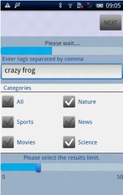
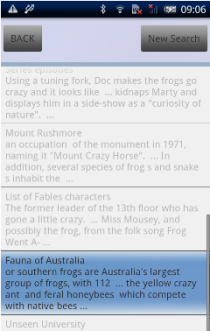
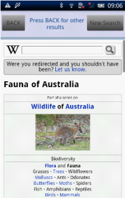

WikiSearchNativeUI
This example application searches Wikipedia, based on user input and selected categories. It makes use of functions in the MoSync Widget API.
|  |  |  |
| Home screen on Android | Summary screen on Android | Web screen on Android |
This example is included in the MoSync SDK installation in the /examples folder. For information on importing the examples into your workspace, see Importing the Examples .
Behaviour
When this application is started, the HomeScreen is presented. From here the user can search Wikipedia articles, filter by category, and specify the number of results to return. Tapping the Next button initiates the search.
While the application engine computes the result in the background, a progress bar indicates progress. When the results are ready, they are displayed as a list of matching article titles. The user can select which Wikipedia entires to show, or select all of them.
In the next screen a snippet of each of the selected articles is displayed, and tapping on a snippet opens the complete article in a WebView widget.
In the Code
The project is divided into several files:
- Main.cpp is the application's main entry point.
- WikiMoblet.cpp contains the moblet that manages the application and handles key events.
- Util.cpp contains utility values such as user messages, methods for managing widgets and performing operations on strings, and methods to convert the HTML content into unicode.
- BasicScreen.cpp contains the base screen of the application, the base screen constructors, and the creation of a main top layout that is common for some screens.
- HomeScreen.cpp is the home screen, where user can add or remove tags, and perform a wiki search based on those tags. It contains list boxes, and vertical and horizontal layouts with widgets for user selection.
- TitlesScreen.cpp displays the available article titles. Results are shown in a list view, and the user can pick only the desired articles. For each selected title, the corresponding article will be displayed in the next screen.
- SummaryScreen.cpp contains the user selected article snippets. Results are displayed in a list view, and each snippet is followed by an anchor. When the anchor is clicked, the whole article becomes available in a WebView widget.
- WebScreen.cpp contains a WebView widget with the user selected article, and buttons for Back and New Search actions.
- WikiEngine.cpp is the application engine. This class is responsible for sending requests to Wikipedia, and handle the XML responses. It manually parses the XML data that is sent back and forth to the Wiki server. The engine communicates with the UI,and constantly sends back notifications on engine status such as chunk of data received, request finished, or error.
- .h header files contain the forward declarations for the main .cpp code files.
Touch responses
- The application is exited by pressing the back button on the home screen. Navigation within the application screens is acomplished with the back button.
On the Home Screen:
- By checking/unchecking the categories boxes the search is filtered.
- By moving the slider the search will have limited number of results. The default slider value is 10.
- By clicking on Next button a new search is initiated for all the selected categories. When request is ready TitlesScreen is displayed.
On the Titles Screen:
- The user can press Select All to select all the given results, or pick only the desired articles.
- By pressing Next the SummaryScreen is displayed which contains article snippets only for the selected titles.
On the Summary Screen:
- Results are displayed in a list view, and each snippet is followed by an anchor. When the anchor is clicked, the whole article becomes available in the WebScreen.
On the Web Screen:
- The user can navigate in the web view freely, and he can go Back to previous screen or initiate a New Search that gets him to the first screen.